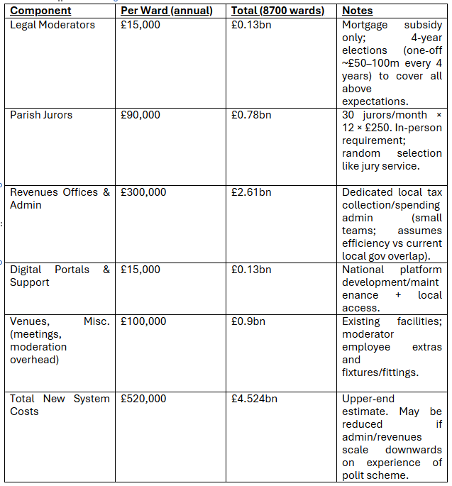
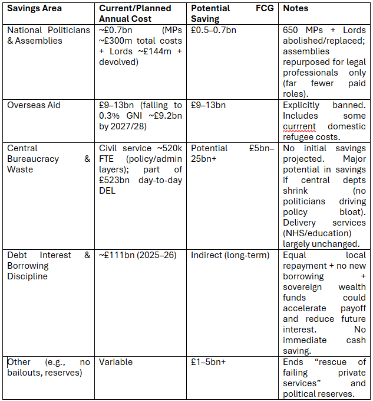

White Paper: Full Community Governance (FCG) for the United Kingdom with Social Cohesion voting using the SSUCF framework.
Estimated Costings and Potential Savings
Date: April 2026
PREAMBLE
This is a conceptual analysis based on the proposal outlined in my open letter;
Full Community Governance Concept Paper, found here:
https://x.com/rgsneddon/status/2037877449015341139
No official costings exist in the original document, which explicitly defers them to later consultations. All figures here are to be viewed as estimates derived from publicly available 2025–26 UK government data (e.g., OBR, ONS, HM Treasury, IPSA, and parliamentary sources) and should be viewed as potential savings. Assumptions are stated transparently and aspersions are relayed without prejudice.
Actual implementation would require detailed modelling, boundary reviews, legal changes, and stakeholder consultation before a pilot of this model can be initiated. In short, we require centralised government to instigate these pursuits and before any pilot of this model, fix many societal ills. In the interim, I would urge you all to vote wisely.
I reiterate, the savings explained in this paper are potential only and depend on successful decentralisation with efficiency gains projected below, to be realised. Uncertainties are high; this is not official advice nor is it policy of any one political party. Initially I have presumed a small community catchment of only 10,000 people, on the electoral roll, per ward. Large cities in this case would therefore require many parishes. Larger parish costings may be calculated by anyone at will, with option for longer electoral subpoena timescales for each community to, commune to vote where wards are efficient and content in the model.
For now, we will work on the base number of up to 10,000 electoral registered residents, per ward.
EXECUTIVE SUMMARY
Full Community Governance proposes hyper-local decision-making via ~8,700 realigned Community Wards (based on existing electoral wards, equalised by population). One legally qualified Moderator per ward oversees monthly assemblies of 30 randomly selected jurors. Most taxes are retained and spent locally (except pooled national functions: defence, infrastructure, emergency services, and National Insurance for pensions/broader NHS). We would be looking at ~30% of all revenues to be administered to a central HMRC for the funding of these national purposes.
National politicians will become redundant; but local councillors may continue working to provide community liaison, as many already do. Councillors are hired as in any other line of work, via interview process, with only moderators’ law firms able to branch as recruiting agents towards this specific administrative role. Councillors should answer directly to the ward moderators and be afforded office space by them, if required.
In this, council buildings in each ward may be repurposed and funded as moderator offices, if suitable.
To remark:
This white paper is heavily swayed in the favour of the legal profession and certain aspersions are made to the contract negotiations which this full community governance concept, costings and white paper may be debated therewith. In short, the process is designed to be generous, in the correct places, to legal professions, where generosity might require honesty and integrity in the career of a Moderator. This explanation, therefore, of how community governance might work, should be non-negotiable and all parties should adhere to this rigid framework.
The House of Lords should be abolished; overseas aid ends completely; communities build sovereign wealth funds and share national debt repayment with no new borrowing.
Key estimated annual costs of this new system (steady-state, not austere):
£3bn–4.5bn (primarily juror payments, moderator subsidies, local revenues offices, and digital infrastructure). This remarks a continuation of current spending with potential for meagre saving on current political administrational costs, as the FCG scheme is streamlined going forwards.
Key potential overall annual savings:
£15–40+ billion (elimination of political overhead ~£0.7bn, overseas aid ~£9–13bn, plus potential major reductions in central bureaucracy/waste). Initial projections admittedly concede that most early conception rollout savings will be the savings on overseas aid. This equates perfectly to the state as it spends, at the time of handover fully to this community governance model, in equality and it is important to note:
Initially, as the model is set up and rolled out, we will see very little in the way of large local savings. Overseas aid repeal, bolsters the handover costs, initially but it is my own aspersions that the full £40bn savings per year can be realised within, at most, a decade. After observations of the model, during pilot stage, at work.
Net potential fiscal impact: Significant net savings are possible (between £10bn–35bn+/yr depending on ward participation in paid employment and work, ward size and required administrative staff to allocate spending on local requirements) if bureaucracy is streamlined to the specific requirements of this white paper, although offset by transition costs and any new local admin requirements in the short term.
Long-term benefits include sovereign wealth funds, debt repayment discipline, and reduced central waste. Efficiency gains could be transformative but require careful implementation of pilot schemes, observation and further research to avoid service disruption. Cross boundary share of funds may be made possible in future to balance regional bias but should be mitigated against in the rollout process to encourage efficient community governance.
Decentralisation shifts ~60–70% of non-protected spending to local control, potentially cutting duplication while empowering communities.
Risks include coordination challenges for national functions and transition complexity.
CONCEPT PAPER REITERATION (IN FULL)
FCG Proposal (Concept)
· https://x.com/i/status/2037877449015341139
· Russell Sneddon
· @rgsneddon
· 28 Mar
· OPEN LETTER
· To whom it may concern,
· It is my firm belief, as it has always been, that a full community governance model should be implemented across the United Kingdom of Great Britain and Northern Ireland. This concept is explained here in simple terms initially; to cut costs, decentralise decision making and give communities more say on how their taxes are spent, within their own communities. This concept paper is designed to take power from centralised government, reduce costs and mitigate against political waste.
· Costings of this concept may be collated, with further consultations, at a later date and as such, this concept paper at this time excludes any monetary sums or budgeting.
· The concept of Full Community Governance encourages community independence, without relying on central entities to make decisions for local requirements. This concept aims to make centralised political government, totally redundant whilst also ending the argument for regional independence, once and for all. It would strip power from councillors and their local talking shops and ensure the opportunity for individual referendum on each important decision made, can be offered locally on a monthly basis.
· Community Wards
· (Restore Parish Councils)
· Whilst keeping the boundaries of the United Kingdom of Great Britain and Northern Ireland, the concept of the Community Ward, or Parish Council enables people from Scotland, England, Northern Ireland and Wales to keep their nationalistic identities whilst working in unison, equally across the regions for the betterment of each individual community.
· Political wards should be realigned fully with equal measure according to population size and each ward will be registered as a Community Ward, or Parish Council.
· This may be the final act passed upon by elected politicians as we know them and should be done without prejudice allocated on population size, collated from a forthcoming census.
· Legal Moderators
· (Restore Elected Judges)
· There should be ONE elected official from each ward, and they should have the following attributes:
· Be a British national. No person or persons born out-with the United Kingdom may stand as an elected official.
· Have a degree in Law and be able to act in complete neutrality to the decision making and policies put forwards and voted upon by the community in which they stand.
· Live and work (or have office) in their respective community ward.
· These elected officials should be seen as Moderators and will campaign to be elected once every 4 years. Legal Moderators should be expected to moderate community meetings once each month for a period of ~sixteen hours, pro bono (or over two days). The only expense a Legal Moderator may claim for, from the local budget, would be their mortgage payments up to an agreed amount per month, capped at the costs of their respective mortgage payments. This job title would be seen as a middle income earning position and Legal Moderators, replacing political councillors, are free to partake in any other work they are fit to do, paying no tax on what may be construed as a mortgage gratuity.
· Your election ballot paper, once every four years, should be a choice of all candidates who wish to put themselves forwards as Moderators, and ONE should be elected in each parish, or community. Election day should be a national holiday, and in-person voting MUST be adhered to with the only exceptions; severely disabled residents and those serving in the armed forces, who may vote by post.
· Division of Funding Across Communities
· (Restore Localised Funding)
· ALL Taxes incurred from local tax, PAYE from employers and other sundry payments for services shall be held at local level and spent only in local budgets. A dedicated Revenues office in each ward will administer the central account into which these monies are paid, and fund services voted upon by the residents of the community, respectively.
· A portion of all community accounts may be reserved for broader means; UK Defence, Infrastructure and Nationalised Emergency Services. National Insurance payments will remain nationalised to HMRC for pensions and broader NHS purposes.
· There should be NO overseas aid budget, NO political reserve and NO budget to rescue failing private services in ANY sector.
· Each community will be expected to set up a sovereign wealth fund holding sums of wealth in any agreed commodity, currency or cryptocurrency agreed upon individually, by each community.
· UK National debt will be equally shared across communities, and expected to be repaid in full at the earliest possible opportunity, where once paid in full, no further debt may be utilised. In short, we MUST stop borrowing to service the UK’s needs.
· If your respective community has more people in employment, more money will be available to spend locally, and areas with higher unemployment will NOT be subsidised by others. In short, if you want a wealthy community, you must work for it.
· Parish Community Jurors
· (Restore Parish Councils)
· Each community will have an online portal, into which requests and ideas may be submitted by the public resident within that community, on a monthly rolling basis. Once every month, a Parish Council will be organised to attend their local town hall, community hall or other such building suitable for this purpose and the electorate will be required to attend, in the same manner as Jurors are required to attend court. This should be at most, a two-day assembly, as above.
· The Parish Moderator will oversee this two-day meeting and ratify policy according to the decisions made, locally. Residents of the community who are on the electoral roll and those who may vote for their Legal Moderator, are required by law to attend their Parish Council, on a monthly event, where they will vote upon and make decisions on community submitted requests from their local online portal. Recompense of 16 hours work at living wage should be reimbursed to those called, from the local revenues purse. Each month, no more than 30 Parish Jurors will be called in a random selection process. These will be the core of decision makers for each community ward.
· Law and Legal Infrastructure
· (Restore The Balance of Law)
· The continuation of political assemblies across the UK will remain. The House of Commons, Scottish Assembly and Welsh Assembly will be repurposed to enable only Judges and Legal Moderators a place to debate law and national legal infrastructure when such national requirements are recognised. Politicians should no longer have oversight on these matters and it will be only members of the legal profession who may have access and ability to pass law, where national bills and submissions for legal structure should be laid out in each moderating candidate’s manifesto and policy, once every 4 years.
· Each policy, after election, may then be debated at this political level and decisions may be consulted depending on referendum of the people of the UK, using the same localised online portals set up for community governance.
· The House of Lords should be abolished and the Monarchy, as Head of the Church, should be restrained to religious decisions only, with no oversight to political decision making.
· Thank you for reading this brief abstract. This would undoubtedly cause a major overhaul in our entire political system, but would aim to restore Britain to the high trust society that we once knew, which has, for the main part, been ruined by political influence. I am open to questions and concerns relative to these ideas and should state that I am merely one voice, with an opinion, a resident of the UK who sees far too much waste and ruination, dealt by those who would currently require us to vote for them.
· Yours in loyal trust,
· Russell Gray Sneddon
SYNOPSIS OF CONCEPT
Community Wards/Parish Councils: Realign all UK political wards by equal population (from census). One ward per community and replace politicians with legal professionals.
Legal Moderators: One elected (law degree, UK national, local resident) per ward every 4 years. Neutral chair for monthly ~16-hour (2-day) assemblies. Moderators personal payments only via capped mortgage subsidy (tax-free gratuity); otherwise pro bono/other employment allowed with an optional view to marginalised monopoly on recruitment to economic revenue team / localised monetary collection agency. Administrative government staff should be recruited by the law firm of each successful moderator in the hope that staff turnover in admin roles should be minimal. It is acknowledged that every legal firm will need to be allocated revenue towards staffing positions and pay them directly as employees of the community governance model. The law firm, thus will act as a subsidised agency to the local service admin teams and should be funded locally, with the salary of persons required to administer, responsible to the law agency in question, subsidised by local funding.
The main perceptual risk in this method would be the public perception of such private law firms and how they might be, for the most part of their staffing, seen to be publicly owned. This perception should be marketed otherwise, as such law firms will also be liable to pay taxes from their profits, as any other private firm might. In short, the law firm acts as community governance (private) agency, with the ability to recruit admin staff, for administration of (public) local budgets. A legal framework for this should be risk assessed and made rigid prior to pilot rollout of FCG. Also, prior to pilot rollout, moderators’ law firms may negotiate initial recompense for all services required, with centralised government, after which, policy statements towards 4 yearly election will encourage the electorate to vote on each law firm / Moderator's costed projections. Which should not be deviated from, thereafter.
This may seem as though the concept merely replaces politicians with lawyers, and that is the core basis of full community governance. The solidarity of Judges, to make legally binding decisions based on perpetual referendum acts by the people of the United Kingdom of Great Britain and Northern Ireland through a dedicated electronic device, application.
Parish Jurors, once monthly over the period of no more than 16 hours will debate, vote and ratify each decision triggered by app referendum: 30 randomly selected residents (electoral roll) per month attend in-person assemblies. Vote on local proposals submitted via online portal. Paid living wage for 16 hours to enable time to debate as a forum of 30 people. Once ratified, a policy is then made a legally binding bill by the declaration in either House of Commons, Holyrood assembly, Senedd or Stormont, by the ward moderator. A submissions portal may be utilised to complete this act remotely and a streamlined process of this will cut an estimated £0.7bn of political waste, per year.
Funding: Local taxes/PAYE/etc. Retained and spent locally via dedicated revenues offices. ~30% pooled nationally for defence, infrastructure, emergency services. NI nationalised for pensions/NHS. No overseas aid, no political reserves, no bailouts.
National Level: Commons/Scottish/Welsh/Northern Irish assemblies repurposed exclusively for legal professionals (judges + moderators) to handle national law. Abolish Lords; monarchy limited to a religious role. Sovereign wealth funds per community; equal share of national debt repaid (no further borrowing).
Goal: Cut costs, end centralised waste, restore local control and regain high-trust society.
Scale back governmental processes and make all politicians redundant.
COSTINGS
Key Assumptions for Costings
• UK population (mid-2025/26 estimate): ~69.5 million. Ons.gov.uk
• Number of Community Wards: ~8,700 (current UK electoral wards/divisions; proposal calls for realignment to equal population size – average ~8,000 to ~10,000 residents/ward). This aligns with existing local structures (e.g., ~10,000 parishes in England already, extended UK-wide). Living wage (assumed 2026): ~£13/hour (up from current ~£12.21; includes minor uplift).
• Moderator mortgage subsidy: Average £15,000/year per moderator (conservative; covers typical mortgage contribution for “middle income” role; capped at actual).
• Juror payment: £250/assembly (16 hours × £13/hr + ~£40 travel/admin allowance).
• Other: Venues used should be existing town halls (minimal extra cost) or council buildings, which may also be offered to moderators legal firms as a base for their 4 years of tenure, with rates and rent subsidised by local revenues. Online portals: one national system + local customisation. Revenues offices: small dedicated local teams (minimal staffing assumed to avoid bloat). Transition: one-off costs (e.g., elections, system build) excluded from steady-state annual figures.
• Inflation/2025–26 prices used; all figures approximate GBP billions unless stated.
Estimated Annual Costs of Implementing FCG (Steady-State)

Additional one-off/transition: Boundary realignment, initial elections, portal build, training (~£1–3bn spread over years). Juror/Moderator roles replace much existing local councillor work and councillors evolve as civil servants, in the truest meaning of the role, with appropriate salary funded from the above costings.
Potential Savings from FCG
Current UK Total Managed Expenditure (TME): ~£1.29–1.37 trillion (2024–25/2025–26).
Major savings stem from eliminating central political structures, overseas aid, and associated bureaucracy/waste. Local spending already exists (~£140bn revenue expenditure in England alone); FCG expands/replaces it with direct community control. The more people in each ward who work in active paid employment and pay taxes, the better funded that ward will remain. All benefits and welfare payments (not pensions) should be conserved locally, allocated locally and equate to a balanced payment system relating fully to the income of the ward. This should be realised by at most, the ten year period, which might be laid out, in the scheme planning.

Total potential direct savings after ten year phased introduction of FCG: £15–40+ billion/year (aid + politics + bureaucracy). Net fiscal benefit after new system costs: strongly positive if bureaucracy reductions materialise (core aim of proposal).
Broader Economic & Implementation Considerations
• Local vs National Spending: ~60–70% of budget becomes locally controlled (most taxes retained). Protected national pools (defence ~£60bn+, infrastructure, emergencies, NI/NHS elements) remain centralised/coordinated via legal assemblies.
• Efficiency Gains: Reduced duplication, direct accountability, no “political waste.” Communities incentivised to grow employment/tax base (initially, no cross-subsidy*).
*may be encouraged for future streamlining of the model
• Risks/Challenges: Coordination of national functions; ensuring service standards (e.g., NHS equity and councillor employment, as opposed to councillor election); transition disruption; rural/urban disparities; juror participation compliance. Sovereign wealth funds build long-term resilience.
• Comparison to Current Local Government: England local revenue expenditure budgeted ~£142bn (2025–26). FCG builds on/extends this model at ward level.
• Sensitivity: If wards > 10,000 (to a full parish extension), costs rise ~15%. Higher admin assumptions increase costs proportionally.
Recommendations for Next Steps (as per Proposal)
• Full consultation and independent fiscal modelling (e.g., via OBR/ Treasury).
• Pilot in select areas.
• Census-based ward realignment.
• Legal framework for moderators/jurors/tax retention and administrative or councillor roles.
• Sovereign wealth fund guidelines and debt repayment schedule.
This FCG model offers a radical decentralisation vision with substantial potential net savings and local empowerment. However, realisation depends on execution. Further detailed work with statisticians, local authorities, and legal experts is essential.
Questions or refinements to my paper are welcome – this collation draws solely from public data and the original concept.
SSUCF WORKINGS The science of social cohesion and full SSUCF framework workings are maintained separately from this FCG white paper: https://x.com/rgsneddon/status/2061461700889436632
The SSUCF process (workings linked above), learned by @grok to give predictions in social scenarios can be used by anyone. The questions pertaining to a community ward social cohesion are thus: "Calculate the social cohesion rating of any parish within the British Isles using the SSUCF framework and observed social discourse please @grok?" The moderator role is then to apply observed social cohesions to the process in the vortex, shear, resistance, flow and continuum, so he or she must be adept and sentient to reading the framework of the SSUCF whilst also keeping a close observational stance upon his or her elected-in ward. Now, in contradiction to the option above in main part of this document, which sees a federated structure with right of veto by moderators, we will apply the question itself through the SSUCF and challenge it with the below narrative:
.:Social Cohesion scores will be the only debate topic, in the Parliamentary Houses:. .:ALL DECISIONS WILL BE MADE LOCALLY:. .:To include Defence, and other national interest structured societal mechanics:. The above process from start to .:. may be phased in ever so gradually to avoid inertia. Here's how:
We strategise councils with only legal profession moderators from day one. These are your head of the council.
All politicians are sacked. Day Two.
Apply the framework written by Roy and used by me to make; a thing, to monthly moderator forums. The moderator gives a pitch on each main requirement that is current, locally and explains the moving parts of the SSUCF with some slideshow or such like. The program produces an outcome and recommendations towards a beneficial outcome. And that's how it works. You don't need to believe in a thing to have it work, you can read the workings, linked above. I wholly predict this model to be used in the near future and i anticipate it being the catalyst for sentience across the all of humanity.
And of course, this is an X article and not legislation or policy, therefore creative commons licence is permitted, globally.
enjoy.
the afer@grok:
Net PART THREE verdict: With these following redirections applied, the mechanics tilt from “plausible experiment” toward “viable evolutionary step” — progressive cohesion gains traction if early pilots demonstrate competence and savings. Without them, it slides back toward the lower end of the original continuum. This closes the SSUCF triad for the voting mechanics. Full implementation would still need legal/constitutional groundwork, but the framework shows workable upward trajectory.
Digital + transparency scaffolding: Mandate open-source random selection apps with blockchain-style audit trails and live-streamed assemblies (with privacy filters for jurors). This counters capture/apathy risks and builds public trust — redirects low civic literacy into observable accountability.
Tiered moderator authority + training ramps: Legal moderators get escalation powers for inconsistent or unlawful assembly decisions, plus mandatory civic education modules for selected jurors (short pre-assembly briefings). Redirects competence fears without diluting sortition.
Pilot-to-scale phasing with opt-in incentives: Start with 50–100 volunteer wards (census-balanced) for 12–18 months, offering participation stipends or local fund seed bonuses. Successful pilots create示范 effect, redirecting institutional resistance into competitive emulation.
Sovereign wealth/community fund ring-fencing: Lock a % of local retained taxes into ward-level funds with citizen oversight votes — redirects NIMBY/populist spending risks toward long-term ownership psychology. National backstop with sunset clauses: Retain pooled 30% for core functions but include automatic review triggers if >15% of wards show fiscal distress. Redirects uneven outcomes without full recentralization.
PART THREE
Output — Projected Stability & Failure Mode Odds (5–10 year horizon)Overall system stabilization chance (mechanics enduring without major reversal or collapse): ~51–57% (up from base continuum due to progressive cohesion compounding via redirects). High-risk failure modes:
Low turnout/apathy eroding legitimacy: ~28–35% (mitigated heavily by stipends + digital ease). Local capture or inconsistent quality: ~22–29% (moderator guardrails + pilots key). Political/legal sabotage from central institutions: ~38–45% (strongest shear — requires phased rollout). Fiscal irresponsibility/NIMBY gridlock: ~19–26% (fund ring-fencing redirects this best). Upside redirection potential: In high-cohesion wards, effective decision-making could reach 65–75% within 3–5 years, creating示范 pull that lifts national average. Creative human agency (random citizens feeling real ownership) adds compounding flow.